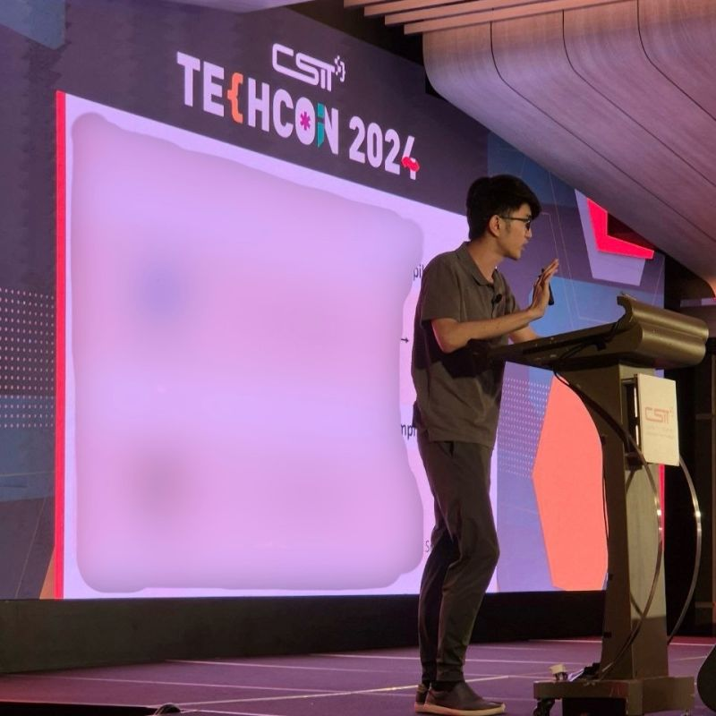
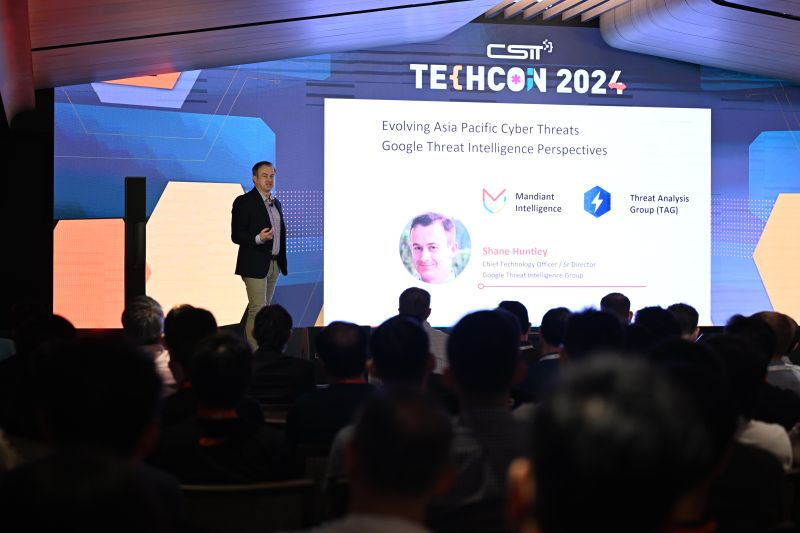

TechCon began over a decade ago with a clear vision: to create a space where Africa’s brightest minds
could come
together and explore the rapidly evolving world of technology. What started as a small meetup among
passionate
developers has grown into a continental event attended by thousands.
Today, TechCon serves as a launchpad for innovation, collaboration, and professional growth across the
African tech
ecosystem.
Our Mission
The mission of TechCon 2024 is to empower the next generation of African innovators by providing access
to learning,
networking, and transformative ideas.
We aim to inspire individuals, strengthen communities, and build solutions that tackle real-world
challenges using
technology. Whether you're a student, entrepreneur, or seasoned professional, TechCon is the place to
fuel your
creativity and unlock new opportunities.
Notable Past Speakers
Over the years, TechCon has hosted many influential leaders in technology, business, and innovation
Amina Johnson
AI Researcher known for her work in ethical machine learning

Lee Chan
Cybersecurity expert recognized across Africa for his digital safety initiatives.

Dr.Samuel Thompson
Co-founder of a major African fintech startup advancing financial inclusion.